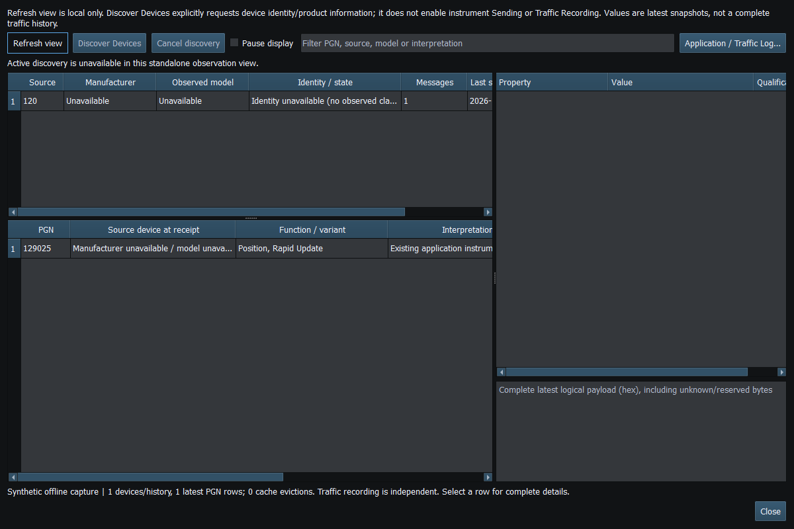

Tools → NMEA2000 Diagnostics separates observed protocol traffic and device identity from instrument-widget support. A message can appear here even when no application instrument decoder exists.
Source address is not a permanent device identity. Address claims supply NAME; Product Information supplies model/software/serial information when observed. Provisional identities and conflicts must remain visible rather than being silently merged. Device labels can improve when metadata arrives.
The general Diagnostics discovery tool currently supports Network NMEA2000 and native SocketCAN identity-request paths. It requires a healthy receive connection/claimed source and, for Network, TX capability plus the existing secure key. Stop instrument Sending and finish route service first. Discovery is bounded and does not authorize ordinary instrument output.
Do not infer serial-adapter general discovery from the route dialog's separate Discover Devices integration. Serial CAN discovery remains separately scoped. Actisense restrictions remain intact. The route-service dialog uses its own policy and cancellation lifecycle.
Diagnostics retains a limited number of samples. Unsupported messages remain as raw data; a named proprietary message may expose only some fields. Raymarine SeaTalk Pilot Heading interpretation applies to manufacturer 1851/industry 4. Other variants remain separate.
Find supported display/output fields in the PGN reference. Review device NAME, serial numbers, coordinates and private data before sharing diagnostic information.

Figure 72. Select a received PGN to inspect its fields, source and raw data. Click to enlarge.
Figure 73. Pause affects display refresh; it is not a transport disconnect or a stop of incoming traffic. Click to enlarge.
NMEA2000 Overview · NMEA0183 Overview · Network NMEA2000 · SocketCAN · CANable SLCAN · Waveshare USB-CAN-A · Actisense NGT-1 · Signal K · Connection Troubleshooting · Enable, Dispatch and Sending · Route Overview · Engineering Units